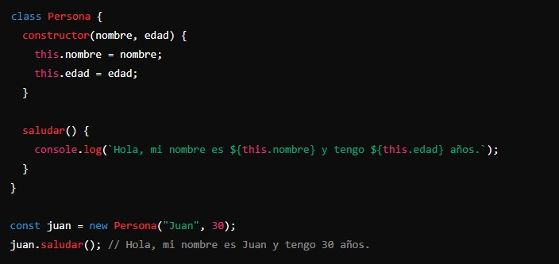
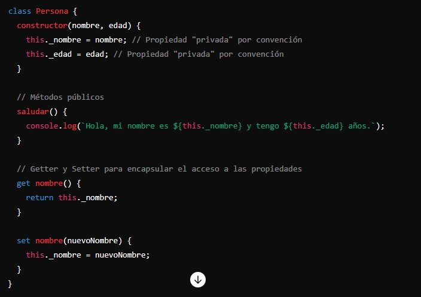
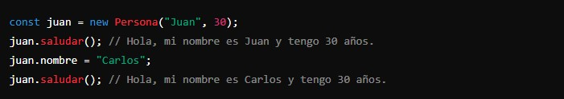
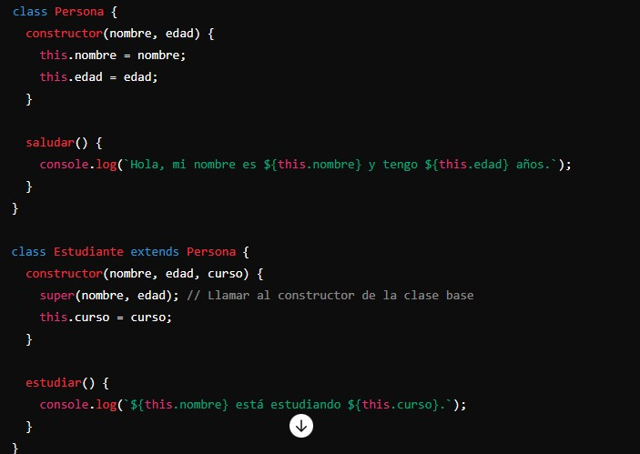
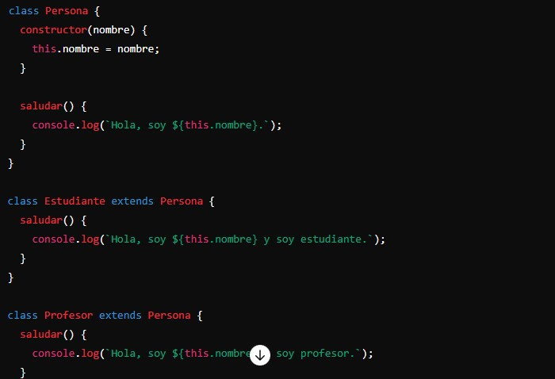
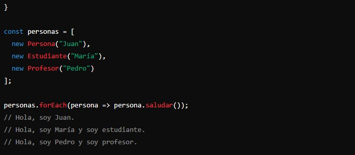
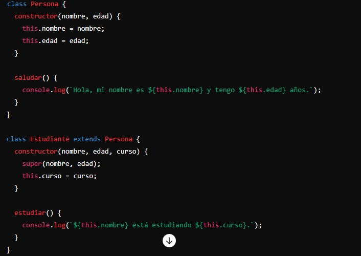
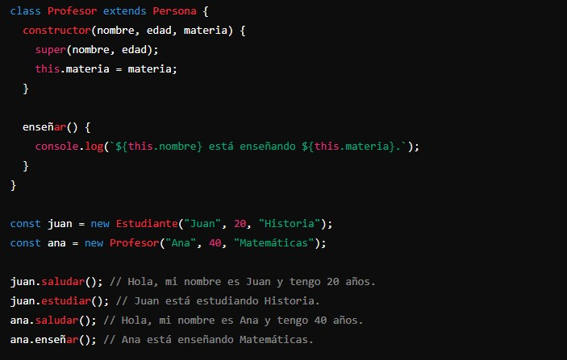

La Programación Orientada a Objetos es un estilo de programación que organiza el código utilizando "objetos". Los objetos son estructuras que combinan datos (propiedades) y comportamientos (métodos).
La POO se basa en varios principios y conceptos fundamentales:
Clases y Objetos:
Clase: Una clase es un "molde" o "plantilla" para crear objetos. Define las propiedades y métodos que los objetos creados a partir de ella tendrán.
Objeto: Un objeto es una instancia de una clase. Es una entidad que contiene datos y métodos definidos por su clase.
Ejemplo:
Encapsulación:
La encapsulación es el principio de ocultar los detalles internos de un objeto y exponer solo lo necesario. Esto se hace mediante la definición de propiedades y métodos públicos y privados.
Ejemplo:
 Herencia:
La herencia permite crear nuevas clases basadas en clases existentes. La nueva clase "hereda" las propiedades y métodos de la clase original, y puede añadir nuevas características o modificar las existentes.
Ejemplo:
Polimorfismo:
El polimorfismo permite tratar a los objetos de diferentes clases de manera uniforme. Es la capacidad de un método para hacer diferentes cosas basadas en el objeto que lo está invocando.
Ejemplo:
 
¿Por qué usar Programación Orientada a Objetos?
- Organización: La POO ayuda a organizar el código en estructuras coherentes y reutilizables.
- Reutilización: Las clases y objetos pueden reutilizarse en diferentes partes del programa.
- Mantenimiento: La encapsulación facilita el mantenimiento y la actualización del código.
- Modelado del mundo real: La POO permite modelar entidades del mundo real de manera más natural y directa.
Clases y Objetos: Clases son plantillas para crear objetos; los objetos son instancias de clases.
Encapsulación: Oculta detalles internos y expone solo lo necesario mediante propiedades y métodos públicos y privados.
Herencia: Permite crear nuevas clases basadas en clases existentes, heredando sus propiedades y métodos.
Polimorfismo: Permite que diferentes clases puedan ser tratadas de manera uniforme a través de métodos comunes.
Ejemplo: Supongamos que estamos desarrollando un sistema para una escuela con clases para diferentes tipos de personas: profesores, estudiantes, y personal administrativo. Cada tipo de persona tiene comportamientos y datos específicos.
 